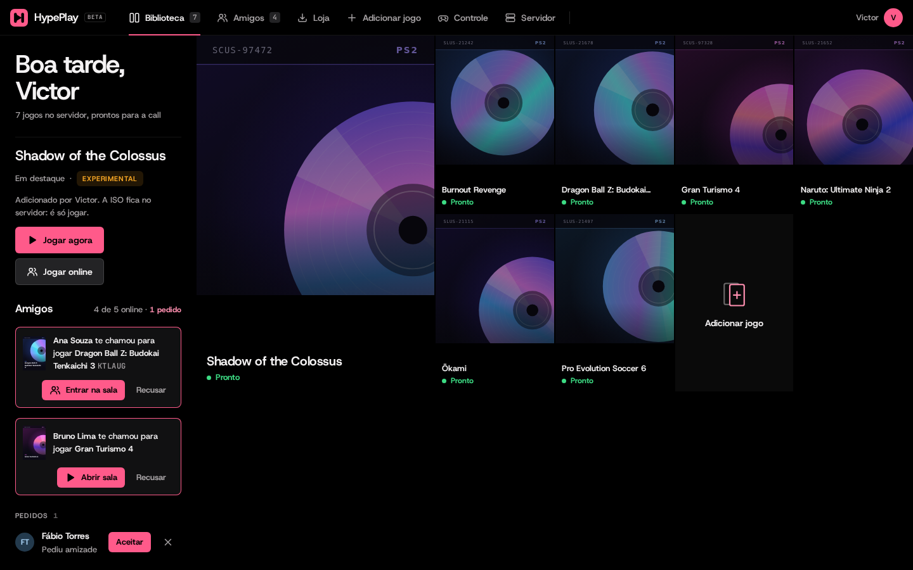
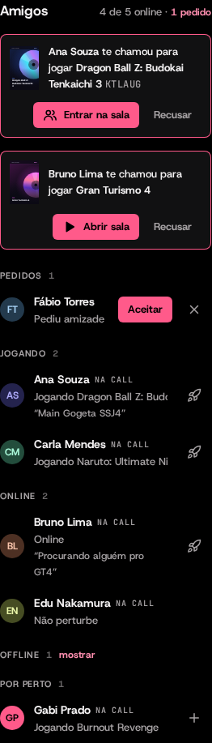
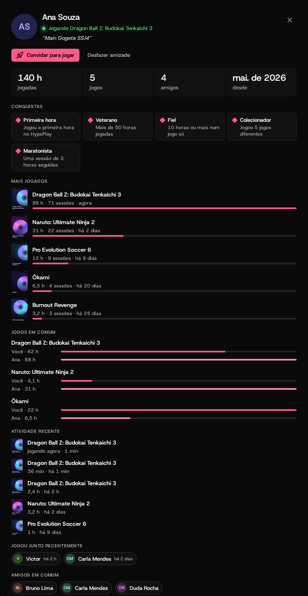
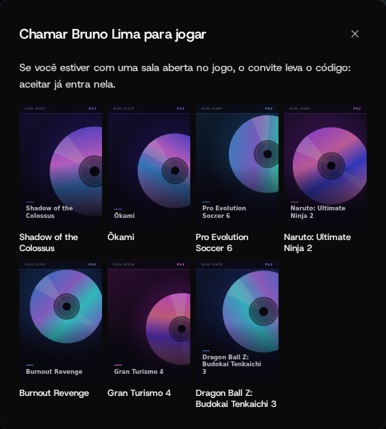
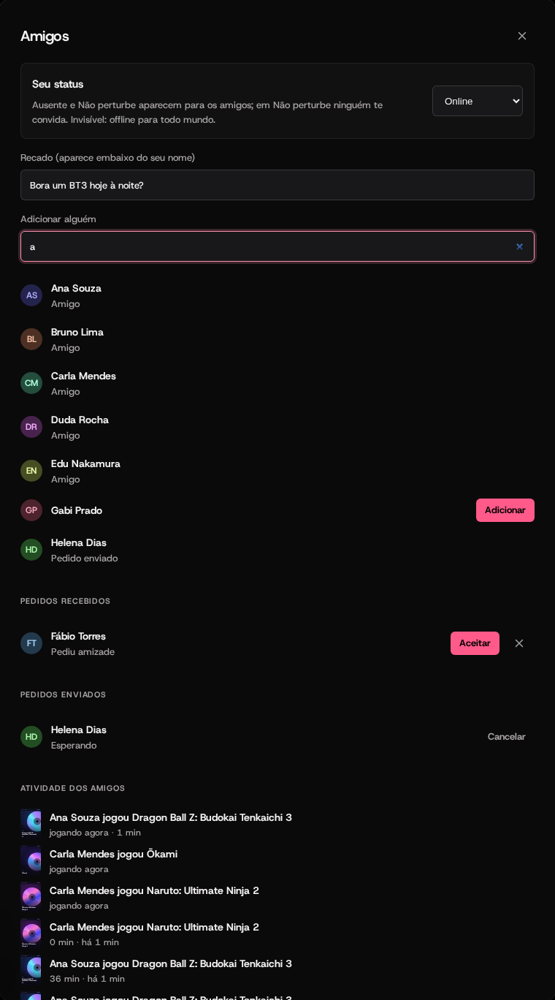

Amigos, do jeito da Steam,
no preto e coral do Mosaico.
Lista de amigos ao vivo, perfil com as horas de cada jogo, conquistas, convites que já entram na sala, recado, status e avisos. Tudo sai do que o HypePlay já sabe: quem abriu a biblioteca e a batida de 15 s que todo jogo aberto manda ao servidor.


Quem está jogando o quê, agora
A coluna de "Pessoas" virou Amigos, agrupada como na Steam e atualizada a cada 2 s, sem pedido extra ao servidor (vem junto com a biblioteca).
- Convites no topo"Ana te chamou para jogar BT3 · JR3BB9": Entrar na sala entra direto como jogador 2. Sem sala, Abrir sala abre o jogo online e a sala aparece na lista de quem convidou.
- Pedidos de amizadeAceitar ou recusar ali mesmo.
- Jogando · Online · OfflineJogo atual e há quanto tempo, a tag NA CALL, o recado de cada um. Com sala aberta: Entrar / Assistir. Offline fica recolhido.
- Convidar com um cliqueO foguete ao lado de cada amigo online chama para jogar (some em quem está em Não perturbe).
- Por pertoQuem está no HypePlay e ainda não é amigo, com o botão + para adicionar.
Clique no nome: as horas, os jogos, a história
O perfil de qualquer pessoa, amigo ou não. Clicar no seu próprio nome, no canto da barra, abre o seu.
- Números grandesHoras jogadas, jogos, amigos e desde quando está no HypePlay.
- Mais jogadosCapa, horas, sessões e a última vez, com barra proporcional ao jogo mais jogado.
- Jogos em comumVocê contra a pessoa, lado a lado, em cada jogo que os dois jogaram.
- Atividade recenteAs últimas sessões com a duração; a que está rolando diz "jogando agora".
- Jogou junto recentementeQuem estava no mesmo jogo ao mesmo tempo.
- Amigos em comumCada um abre o próprio perfil.
- AçõesEntrar na sala, Convidar para jogar, Adicionar, Aceitar, Cancelar pedido ou Desfazer amizade (com confirmação).

Selos que saem das próprias horas
Calculadas na hora a partir das horas e sessões guardadas: nada para sincronizar e nada para trapacear.
Primeira hora
Jogou a primeira hora no HypePlay.
Veterano
Mais de 50 horas jogadas.
Fiel
10 horas ou mais num jogo só.
Colecionador
Jogou 5 jogos diferentes.
Maratonista
Uma sessão de 3 horas seguidas.
Turma
5 amigos ou mais.
"Bora?" que já leva o código da sala
Escolha o jogo pela capa. Se você está com uma sala aberta nele, o convite leva o código e aceitar já entra como jogador 2. Quem aceita avisa quem convidou ("Bia aceitou jogar GT4").
- Só entre amigosE nunca para quem está em Não perturbe.
- Sem spamUm convite por pessoa (o novo troca o antigo), no máximo 10 pendentes, e somem sozinhos em 5 minutos.

Status, recado, busca e o que os amigos jogaram
"Amigos" na barra (ou o link de pedidos na coluna) abre o resto.
- StatusOnline, Ausente, Não perturbe (ninguém te convida) e Invisível (offline para todo mundo, sem "visto por último" e fora da atividade).
- RecadoA frase embaixo do seu nome: "Procurando alguém pro GT4". Até 80 caracteres, salva enquanto digita.
- Adicionar por nomeAcha qualquer pessoa que já abriu o HypePlay, mesmo offline.
- Pedidos recebidos e enviadosAceitar, recusar e cancelar.
- Atividade dos amigosO feed: "Ana jogou BT3 · 2,4 h · há 2 h".

O que mudou, sem precisar olhar
Avisos no canto quando um amigo fica online, começa um jogo, te convida, aceita seu convite, ou quando chega um pedido de amizade. Respeitam "reduzir movimento".
Como funciona
| O quê | Onde | Como |
|---|---|---|
| Horas por jogo | server/social.ts beat | Cada jogo aberto já avisava o servidor a cada 15 s (/here). O tempo entre duas batidas do mesmo jogo conta; um intervalo maior que 30 s abre outra sessão. Assistir não conta como jogar. |
| Amigos e pedidos | add / remove | Pedido dos dois lados; se o outro já tinha pedido, vira amizade. Desfazer limpa os dois lados. |
| Guardado | data/social.json | Em memória e gravado até 2 s depois de cada mudança, um arquivo só (sem duas gravações disputando). Convites ficam só na memória. |
| API | /p/<pass>/… | friends/<id> POST/DELETE · profile/<id> · users?q= · invite · invite/<id> · status. A lista vem dentro de games, o poll que a home já fazia. |
| Tela | page/home/friends.js | Lista, perfil, convite, janela Amigos e avisos; tudo com botões de verdade (dá para navegar no controle). |
| Testes | server/social.test.ts | Amizade dos dois lados, horas com intervalo e assistindo, convites (só amigos, Não perturbe, vencimento), invisível, perfil e reinício do servidor. |